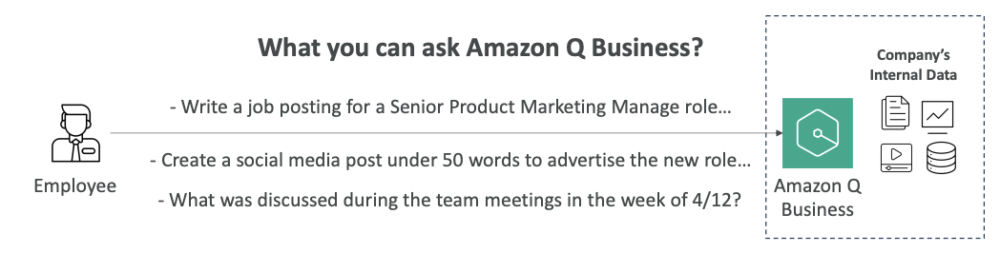
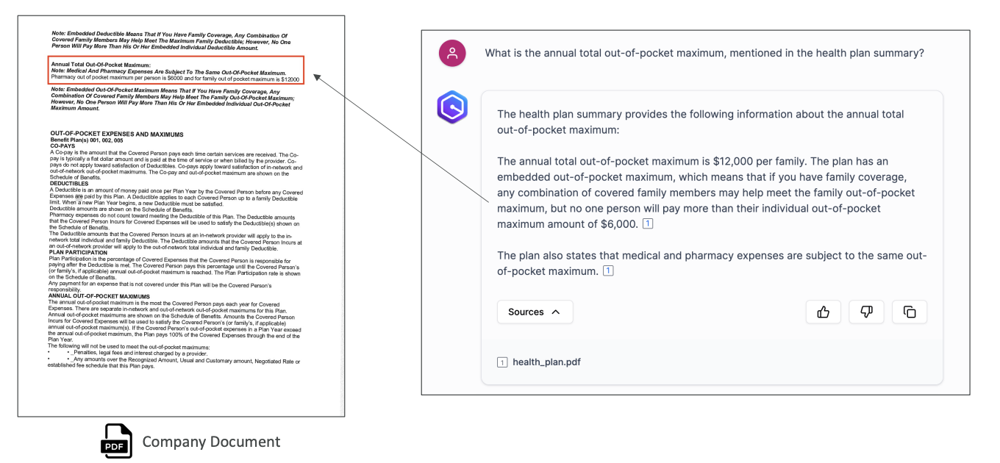
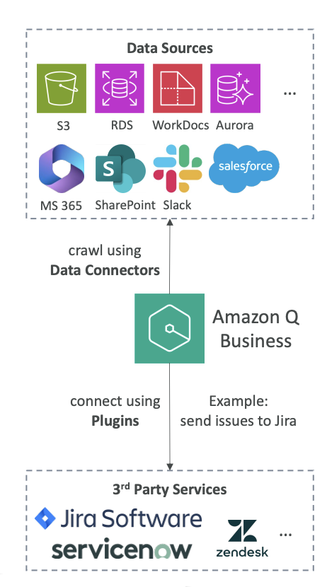
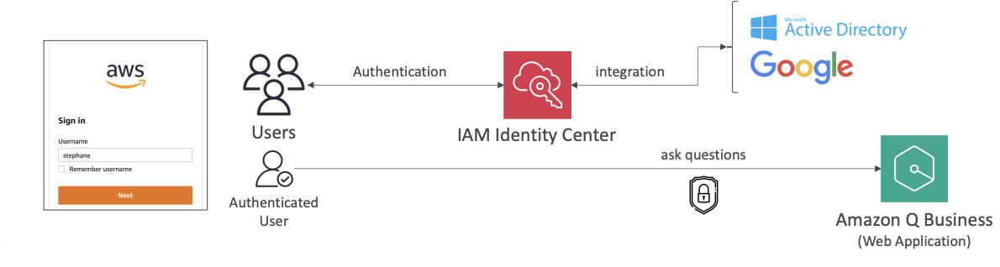
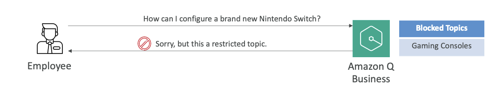

Amazon Q Business
Now let's talk about Amazon Q Business. Amazon Q Business is a fully managed Gen-AI assistant for your employees.
What does that mean?
Well, we have an assistant, but it's based entirely on your company's knowledge and data. This is a very specific use case where Gen-AI is for your company and it's trained on your internal data.
What Can You Ask Amazon Q Business?
Here are some examples of what you can ask Amazon Q Business:
• "Write a job posting for a senior product manager role" - where this role will be very relevant to whatever your company is doing
• "Create a social media post under 50 words to advertise the new role"
• "What was discussed during the team meeting in the week of 4/12?"

Of course, all of this cannot be answered by a general foundation model. It needs to be a model that has been trained on your own internal data with the right security.
Amazon Q Business Capabilities
As a whole, Amazon Q Business can:
• Answer questions
• Provide summaries
• Generate content and automate tasks
• Perform routine actions such as:
- Submitting time-off requests
- Sending meeting invites
Behind the scenes:
- Amazon Q Business is built on Amazon Bedrock, but we have less control so we cannot choose what the underlying foundation model is.
- Actually, Amazon Q Business is built on multiple foundation models from Amazon Bedrock.
- This is a service that's a little bit higher level, geared toward the very specific use case of using and exposing your company's internal data from an LLM Gen-AI perspective.
Example Use Case
Here's an example:

we're asking "What is the annual total out-of-pocket maximum mentioned in the health plan summary?"
- This is for our company - we're in the medical space and we have a company document, a PDF, that has the very answer.
- Amazon Q Business is able to look up that document, look at what the document says, and then give us the answer in our chat, similar to RAG of course.
- We will have a sources section where it says the source of this is the health plan PDF document, and you can click on it and find it right away.
Amazon Q Business Architecture
Data Connectors
First, we have data connectors. Data connectors are fully managed RAG, and you can connect to over 40 popular enterprise data sources. You don't have to learn about them all, but it's good to see some of them:

AWS Services:
• Amazon S3 - where we can store data files onto AWS, it's a very popular service
• Amazon RDS - a database service
• Aurora - another database service
• WorkDocs - a service used specifically for documents on AWS
Non-AWS Services:
• Microsoft 365
• Salesforce
• Google Drive
• Gmail
• Slack
• SharePoint
• And many others
The idea is that Amazon Q Business will have built-in integrations with these services. Once the integration is made, it will crawl these sources and do what it's supposed to do to allow you to search them and query them.
Plugins
Next, we have plugins. While data connectors are about retrieving data and understanding what knowledge is inside our company, plugins are different.
Plugins allow Amazon Q Business to actually interact with third-party services.
Examples include:
• Jira
• ServiceNow
• Zendesk
• Salesforce
• And others
The idea is that if we say to Amazon Q Business "Hey, create a Jira issue" (this is to create a ticket so we can track a problem in our company), then Amazon Q Business will leverage the plugin and automatically create that Jira issue for us.
So on top of reading data, Amazon Q Business has the ability to create and move data in your company as well. You can extend it because you can create custom plugins to connect to any third-party application using APIs.
User Access and Authentication
IAM Identity Center
How do we access Amazon Q Business?
- Our users are going to be authenticated through something called IAM Identity Center.
- IAM Identity Center is a way for users to log in, and once users are logged in, they will only have access to the documents they should have access to.
By using your whole company data with Amazon Q Business, you still have the certainty that someone with less privilege will not be able to access all your documents - otherwise that would be a big security risk.
Here we have IAM Identity Center, and

- our users are going to log into it by just having a sign-in box (see image above) where you enter a username and password and you're good to go.
- Then you have what's called an authenticated user with its own permissions because IAM Identity Center knows what the user is able to access or not.
- The user can then ask questions to Amazon Q Business, which is a web application, and access only the documents it should have access to.
External Identity Providers (IDP)
On top of it, you can integrate IAM Identity Center with what's called External Identity Providers or IDP (see image above). It could be, for example:
• Google login
• Microsoft Active Directory
• And others
This means that instead of logging in and getting an AWS-based sign-in page, you're going to log in with a system where users are already created.
For example, it could be your Active Directory where you have your Microsoft login, or it could be your Google login if you're using the G Suite type of workspace for your company.
This is very handy and really goes hand in hand with whatever security systems you have in place in your company.
Admin Controls
Next, we have admin controls.
These are controls used to customize responses based on what your organization needs.
Admin controls are pretty much the exact same thing as Guardrails in Amazon Bedrock.
Examples of Admin Controls:
Blocked Topics: If we have a blocked topic such as gaming consoles, and our employee asks "Hey, how can I configure a brand new Nintendo Switch?" then Amazon Q Business is going to say "Well, this is a restricted topic." So we can block specific words or topics.

Response Sources: We can also choose for Amazon Q to respond only with internal information versus using also external knowledge.
If we specify it to only use internal information, then only your company documents will be used to respond to a query.
If not, then we have access to the broader knowledge of the foundation model.
Admin Control Levels:
You can set up these admin controls in two ways:
- Global Level - for all types of topics and all types of subjects
- Topic Level - more specific admin controls applied to particular topics
The difference is just at what level you want to apply them.
That's it for Amazon Q Business. I hope you liked it and I will see you in the next lecture.